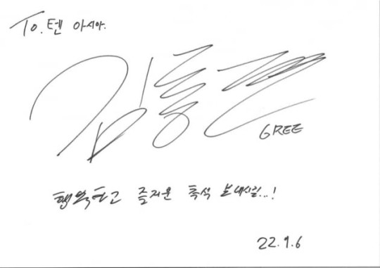
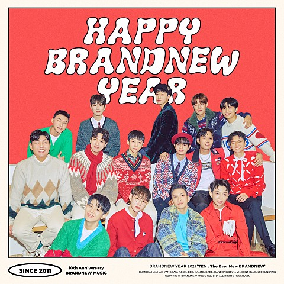

추석은 사실 매번 까먹어요. 크리스마스는 기억하는데 말이죠. 아버지 얼굴도 뵙고, 조카들도 만나고 특히, 얼마전 동생도 생겼기 때문에 추석이 기대되네요. 소원은 건강이에요.
코로나19에 걸려봤는데 정말 아프더라구요. 건강이 최고라는 걸 느꼈죠. 팬 분들도 건강하시고 모두의 행복하고 즐거운 추석 명절 되길 바랄게요
그리가 최근 텐아시아와의 '추석맞이' 인터뷰에서 추석 인사와 명절 계획을 밝혔다. 한 때는 랜선 이모. 삼촌들의 마음을 설레게 했던 그다. 올해 25살이 된 그리. 방송인 김구라의 아들이
아닌, 래퍼 그리로써 성숙해진 모습은 음악에 대한 열정이 가득한 아티스트였다.
그리는 2016년 '열아홉'이란 곡으로 가요계에 데뷔했다. 아버지의 후광도 있었지만, 그의 솔직함이 대중의 이목을 사로 잡기도. 그리의 단단한 내면은 수 년간 연예계에서 살아남은 이유였다.

직접 사인한 김동현
그는 "거창하게 데뷔할 생각은 없었어요. 과거 한 예능 프로그램에서 관심이 있다고 말하고 어쩌다 보니 이 길을 걷게 됐죠. 당시에는 굉장한 논쟁거리였던 것 같아요. 다들 래퍼 그리에 대해
궁금해 했으니까요. '열아홉'은 저에게 뜻 깊은 곡이에요. '나 완전 힙합이야' 이런 것 보다 제 진심을 담은 이야기를 풀어냈고, 많은 분이 관심을 가져주셨어요"라고 말했다.
그리는 음악 작업에도 최선을 다하고 있었다. 그는 "제 음악 행보를 보면 계속 싱글 위주로 냈었어요. 미니앨범만 3~4개 냈죠. 2016년에 냈던 '열아홉' 이후 6년이 지났어요. 근데
막상 저한테 1집, 2집이라 내세울 앨범이 없더라구요. 그래서 정규 앨범을 준비하고 있어요. 저만의 솔직함을 더한 앨범이죠. 전에는 음악에 대한 강박, 집착이 있었어요. 제가 즐겨야 듣는
분들도 즐기는데 말이죠. 요즘에는 편안한 마음으로 즐기는 음악에 집중하고 있어요"라며 앨범 작업이 순항 중임을 알렸다.
또한 앨범 발매 시기에 대해서도 귀띔했다. 그리는 "올해 안에 앨범이 나올 것 같아요. 앨범에 대해 조금 이야기하자면, 애드 쉬런이란 가수가 콜라보 앨범을 냈더라구요. '뷰티플
피플'이란 곡이 수록된 앨범 말이에요. 돌아보면 제가 지금까지 협업한 아티스트가 없어요. 두 가지 욕심이 생기더라구요. 대중과 아티스트 모두에게 인정받는 아티스트. 아티스트와의
협업이 제 꿈을 이뤄줄 키라고 생각해요"라고 밝혔다.
마무리
마지막으로 군대에 대한 이야기도 덧붙였다. 그리는 "군대요? 대한민국 남성이라면 당연히 가야죠. 원래는 진짜 일찍 다녀올 생각이었어요. 음악이나 방송 활동
때문에 늦어졌죠. 신체검사에서는 1급 판정을 받았어요. 언제쯤 갈지는 모르겠어요. 모든 일이 제 생각대로 되는 경우가 없더라구요. 일단 주어진 일을 열심히 할 생각이에요. 성과는 분명
따라오겠죠"라며 특유의 솔직, 담백함을 보여줬다.
그리 노래 추천

범키, 한해, 양다일, AB6IX, BDC, 칸토, 그리, 한동근, 빈센트블루, 이은상 등 2021년 현재의 브랜뉴뮤직을 대표하는 초호화 아티스트 군단이 총출동한 이번 BRANDNEW
YEAR 싱글의 타이틀곡 'HAPPY BRANDNEW YEAR'는 브랜뉴뮤직의 대표 프로듀싱팀 붐바스틱이 원곡에 이어 다시 한번 프로듀싱을 맡으며 그 의미를 더했는데, 힙합적인 요소가
돋보이는 URBAN R&B 곡이었던 원곡과는 다르게 이번에는 빈티지한 감성을 가미한 감미로운 R&B 트랙으로 새롭게 편곡해 원곡과는 또 다른 감동을 선사할 예정이다.